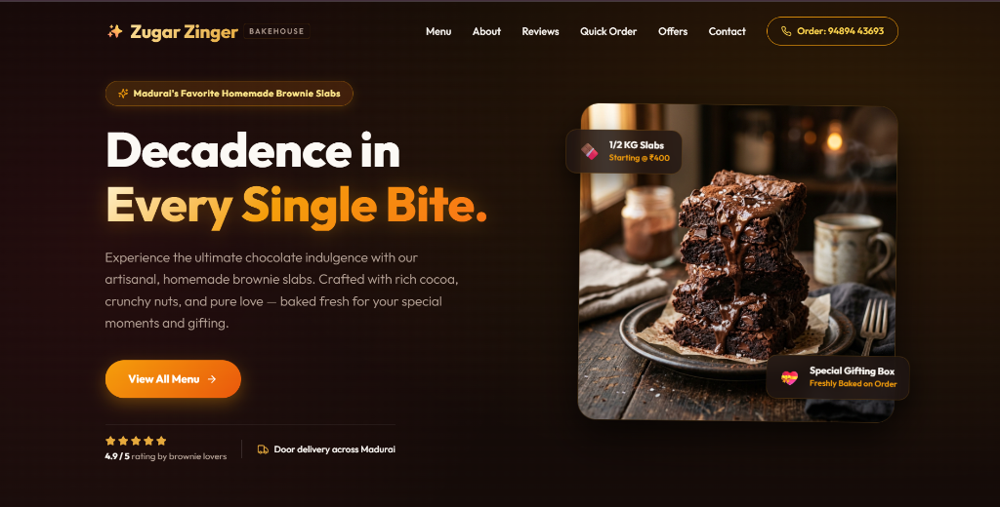
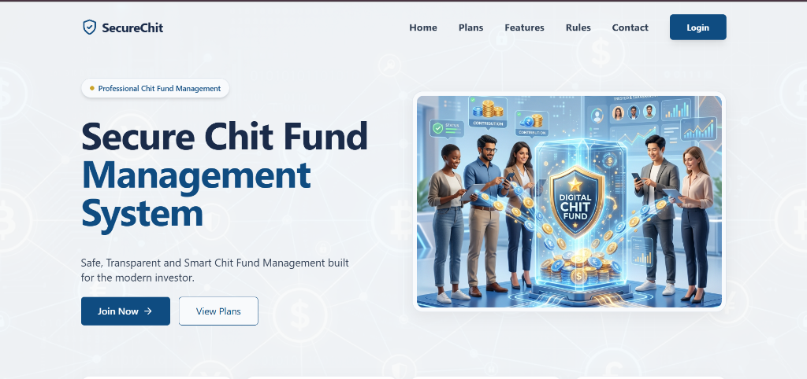
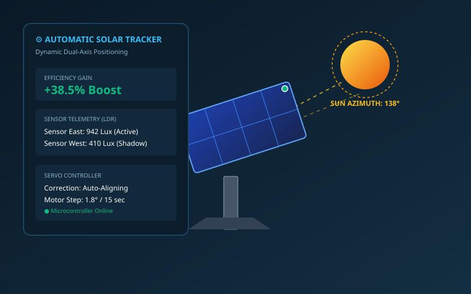
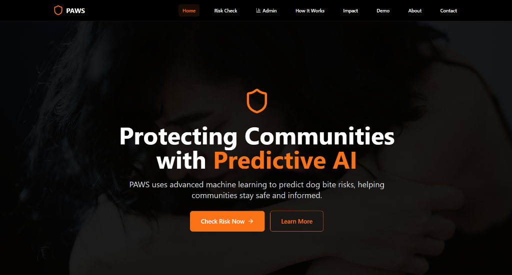
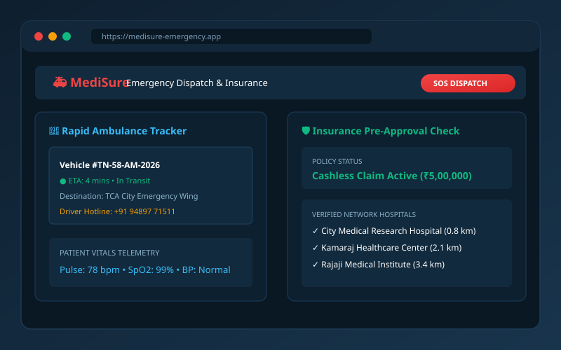

🎨 Frontend Engineering
Creating pixel-perfect, mobile-responsive interfaces using semantic HTML5, modern CSS layouts (Grid/Flexbox), and JavaScript.
Motivated Computer Science developer specializing in frontend engineering, Java application development, responsive user interfaces, and robust database-driven solutions.
All systems operational • Open to opportunities
About me
I'm Naresh Kumar R., an entry-level software engineer and frontend developer passionate about creating fast, accessible, and high-performance applications.
With practical frontend experience gained at DCI and certified as a Full-Stack Developer by Beestrive, I combine rigorous Java object-oriented principles with modern web engineering to build minimal-bug, user-centric digital products.
Beyond web engineering, I have a deep curiosity for computer architectures, embedded systems, and cutting-edge advancements like quantum computing.
Work togetherCreating pixel-perfect, mobile-responsive interfaces using semantic HTML5, modern CSS layouts (Grid/Flexbox), and JavaScript.
Applying Java's object-oriented architecture, portability, and multithreading concepts to build efficient, cross-platform systems.
Designing structured PostgreSQL databases, handling secure queries, and deploying live production applications to Vercel.
The stack
The tools matter. The system thinking and problem-solving mindset matter more.
Selected work
From live deployed web applications to database financial platforms and hardware innovations.
Designed, built, and publicly deployed a sleek web application for an artisan bakery brand. Showcases bespoke cakes, pastry menus, pricing, customer offers, and an intuitive shopping interface optimized for mobile and desktop screens.

Open Live Website →A robust software solution developed with Python and PostgreSQL to automate chit fund operations, monthly subscriber auctions, dividend computations, transaction ledgers, and secure records management with ACID compliance.

Open Live Portal →Engineered an automated dual-axis tracking system using Light Dependent Resistors (LDRs) and servo motors that continuously calculates the sun's trajectory in real-time, boosting photovoltaic energy capture efficiency by over 38%.

Inspect Architecture →An AI-powered civic technology platform created in Bolt to predict dog bite risk zones using machine learning models, environmental factors, stray pack density, and temporal incident patterns in Madurai. Features real-time risk calculations, community advisories, and municipal incident monitoring. Secured First Prize at the National Science Expo.

⚡ Built in BoltAn emergency healthcare assistance application engineered to streamline rapid ambulance dispatch, patient vitals telemetry transmission, and health insurance claim pre-authorization. Secured 3rd Prize at the TCA Hackathon.

Hackathon Award Winner →Flagship case study & engineering
How projects transition smoothly from semantic requirements to robust Java/Python backends, ACID-compliant databases, and cloud deployments.
Users evaluate a product in seconds. Modern frontend architecture requires modular components, semantic structure, zero layout shifts, and instantaneous responsiveness across any viewport.
Clean separation of concerns guarantees maintainability. Whether executing business logic in Java or running relational queries against PostgreSQL, data accuracy and speed are non-negotiable.
Select any architectural layer below to inspect its role and implementation.
A clean relational architecture maintains data integrity, eliminates redundancy, and enables efficient SQL joins across users, transactions, catalog items, and audit logs.
Experience & Academics
Formal computer science education, production frontend internship, and professional full-stack certification.
DCI (Data Core Information)
Successfully completed an intensive internship focusing on modern frontend web development, user interface implementation, and cross-browser responsiveness.
Beestrive Technologies
Completed 6 months of comprehensive full-stack software development training covering frontend architectures, backend programming, and database design.
TCA • Madurai Kamaraj University
Academic Performance: 80% (Up to 4th Semester)
Strong academic coursework in Object-Oriented Programming with Java, Data Structures, Relational Database Management Systems, Computer Networks, and Software Engineering.
VHN • State Board of Tamil Nadu
Academic Performance: 93% Distinction
Specialization in Mathematics, Computer Science, and Physical Sciences.
VHN • State Board of Tamil Nadu
Academic Performance: 83.6%
Honors & Recognition
Active participant in statewide technical symposiums, research presentations, and leadership initiatives.
TCA National Science Expo
Won First Prize for outstanding demonstration and implementation of technological innovation.
TCA College Hackathon
Awarded 3rd Prize for developing MediSure, an emergency healthcare assistance and insurance claim facilitation prototype.
ANJAC Innovation Forum
Recognized as Overall Runner-Up among hundreds of participants for creative technology pitch and problem solving.
TCA Innovation Forum
Secured top honor for technical solution presentation and design clarity.
Department of Computer Science
Delivered technical seminars on "Basic Concepts of Java" and "Advanced Concepts of C" to peers and faculty.
GDG Seminars at TCA & HCL
Active attendee at GDG technical conferences exploring modern cloud architecture and AI developer tools.
Institutional Training Modules
Completed 60 Hours of Technical Training, 30 Hours of Aptitude Training, and 16 Hours of Communication Training.
Advanced Technology Series
Attended specialized workshops on the "Use of AI Tools", "Introduction to Machine Learning", and "Critical Thinking".
National Service Scheme (NSS)
Active blood donor and dedicated community volunteer, participating in the special NSS rural service camp at Thiruvathavur.
How I build
Writing clear, reliable, and user-friendly code that makes the next iteration effortless.
Interfaces are engineered for speed, clean semantic layout, and flawless rendering on any screen size.
Writing structured, reusable code following clean coding conventions and Java OOP principles.
Validating edge cases, handling errors gracefully, and minimizing runtime bugs before code reaches users.
Prioritizing accessibility, clear navigation, and user delight in every button, form, and page.
Modeling normalized relational tables with PostgreSQL to guarantee consistent, trustworthy data.
Always expanding knowledge—from full-stack web frameworks to reading whitepapers on quantum computing.
Developer status
Continuous integration of skills, real-world project deliveries, and proactive problem solving.
Code that builds the system
Public repositories showcasing clean code, real deployment, and database integration.
A responsive bakery brand application featuring product menus, live pricing, and seamless Vercel deployment.
HTML5 • CSS3 • JavaScript • VercelA secure financial management platform for chit funds engineered with Python, PostgreSQL, and ACID integrity.
Python • PostgreSQL • SQL • VercelDual-axis automated solar tracking system optimizing photovoltaic angle calculation via microcontroller logic.
Embedded C • Microcontroller • SensorsPredictive AI platform forecasting dog bite risk zones in Madurai using machine learning. Built in Bolt.
Predictive AI • Machine Learning • ⚡ Built in BoltThe next step
Seeking an entry-level Frontend Developer or Software Developer role where I can build efficient, user-friendly applications and contribute to team success.
Open to frontend & software developer opportunities
Whether you have an exciting job opportunity, a project collaboration, or want to discuss modern web technologies, my inbox and phone are always open.
Direct lines: Phone / WhatsApp: +91 94897 71511 • Email: naresk1213@gmail.com